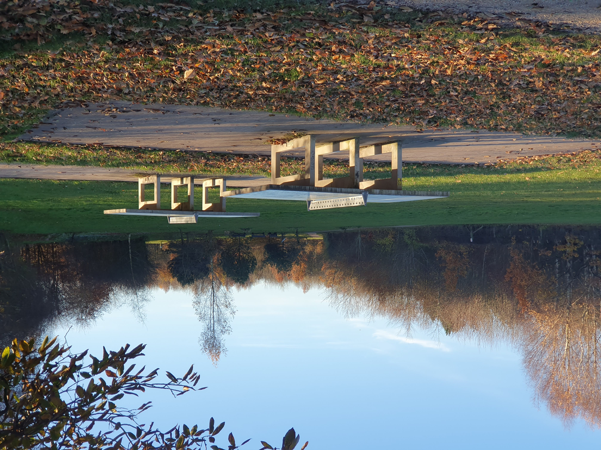
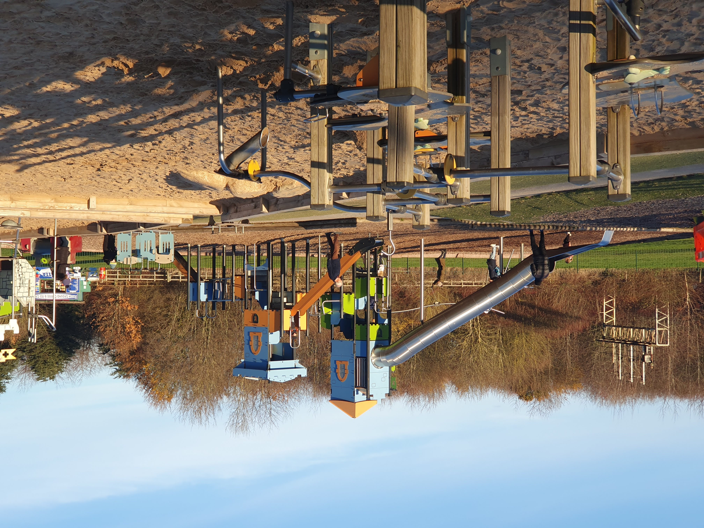
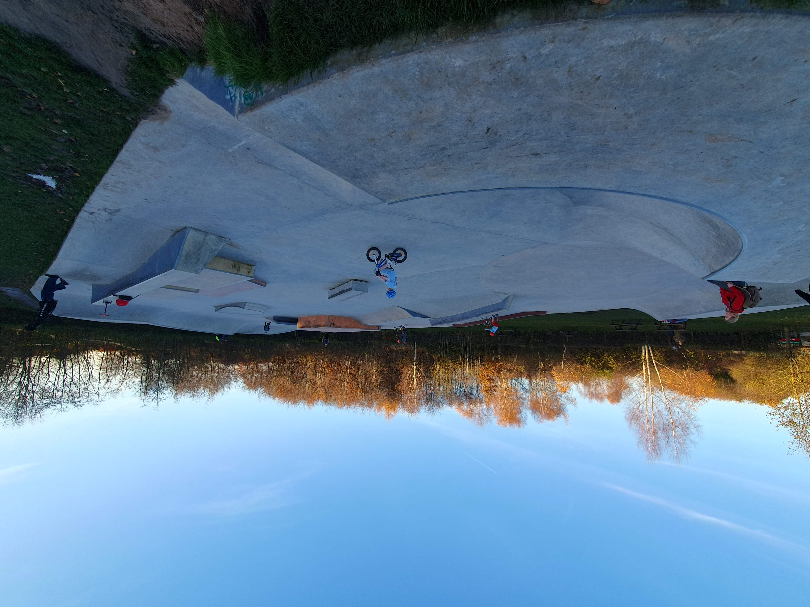
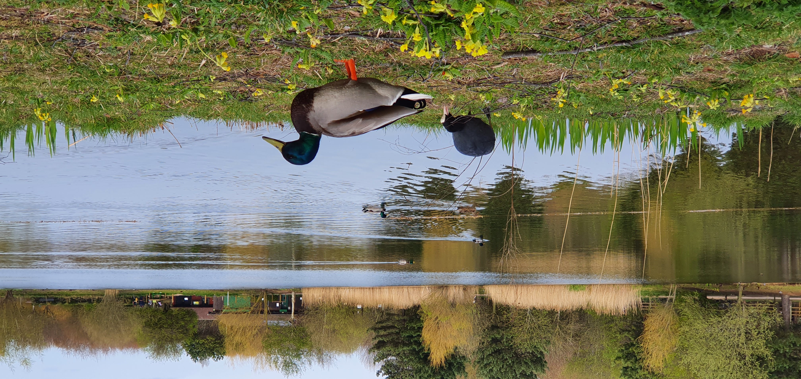

Activities and Events
Activities
Holiday activities are delivered throughout the year, including den building and pond dipping. See the Friends of RCP Facebook page for upcoming events.
Dog walks
Discover the top dog walks in the Rushcliffe District, perfect for you and your furry friend to explore together. Join us for some outdoor fun and socialize with other dog lovers.
Outdoor exercise equipment
There is a wide range of exercise equipment that can be used whatever the weather. Have a go any time of year in our outdoor gym, it is free to use.
Table tennis
Two table tennis tables are available free to use by the play area.

Play area
The Country Park has a large, well equipped play area with a medieval
city – 8m tall, railway-themed play equipment, large sandpit area,
plus the usual swings, slides and roundabouts.
The play
area is a very popular facility and was refurbished in 2014 and will
be again in 2023. We asked parents and kids what they wanted to see -
which is why it's such a hit.

Skatepark

Our brand new skatepark is now open and ready to use. It is suitable for skateboards, bmxs and scooters and anybody from beginners to professionals will find some exciting and challenging features.
4X cycle track
The 4X cycle track in the woodland behind the skate park was completed in 2008. Great for beginners and pros, the track offers a challenge for everybody.
Parkrun is held at 9 am every Saturday –
register at parkrun .
Parkrun is held at 9 am every
Sunday –
register at junior
parkrun .
Orienteering
The park has a permanent orienteering course that is free to use. Map are available in the visitor centre or at British Orienteering .
Trails
There are several interactive trails around the park, all made by volunteers. The sheets to follow are available for sale in the visitor centre for 50p.
Events
Wildlife watch
Are you 8 to 13 years old? Interested in nature exploration and
discovery, games and practical activities with other young people?
Then
come and join in the fun. We usually meet on the 2nd Saturday of every
month from 11 am to 1 pm, whatever the weather.
Younger children
will need to be accompanied by an adult for the duration of the
session. A small charge is made to support the running of the group.
Find out more from Nottinghamshire Wildlife Trust

Parkrun
Parkrun UK is hugely popular organisation that delivers weekly free timed events around the UK. Runners must register in advance before coming to the park to a session.